git pull origin M4 下载框架代码。
请输入 Token 登录。
现代编程语言提供交互式语言运行环境 read-eval-print-loop (REPL): python, node, 就连 Java 都引入了 jshell。例如 Python Shell (以及更方便的 Jupyter Notebook) 可以快速帮助大家解决高等数学作业、高精度计算等烦恼：

你会预期 C 语言同样也可以实现 “交互式” 的 shell，支持即时定义函数，而且能计算 C 表达式的数值。如果你输入一行代码，比如strlen("Hello World")，这段代码会经历 gcc 编译、动态加载、调用执行，最终把代码执行得到的数值 11 打印到屏幕上。这就是本实验的内容。
crepl - 逐行从 stdin 中输入单行 C 语言代码，并根据输入内容分别处理：
解释执行每一行标准输入中的 C “单行” 代码 (假设我们只使用 int 类型，即所有输入的表达式都是整数；定义函数的返回值也永远是整数)，分如下两种情况：
为了简化实验与操作系统无关的细节，如果输入的字符串 (一行) 以 int 开头，我们就认为它是一个函数。
int fib(int n) { return (n <= 1) ? 1 : fib(n - 1) + fib(n - 2); }
函数接收若干 int 类型的参数，返回一个 int 数值。如果一行是一个函数，我们希望它将会经过 gcc 编译，并被加载到当前进程的地址空间中。函数可以引用之前定义过的函数。
如果一行不是以 int 开头，我们就认为这一行是一个 C 语言的表达式，其类型为 int，例如
1 + 2 || (fib(3) * fib(4))
这对于交互式的 C Shell 来说是 “自然” 的需求。我们假设，函数和表达式都不会访问全局的状态 (变量) 或调用任何库函数。如果一行既不是合法的函数 (例如调用了不允许调用的函数)，也不是合法的表达式，crepl 可以不保证它们执行的结果 (不一定要报告错误，例如你的程序依然可以照常编译或执行，但你的程序要尽量不会 crash)；重复定义重名函数你也可以当做 undefined behavior 不必做出过多处理——我们的测试用例中没有这样的情况。
在本实验中，我们要求你实现交互式的 REPL，即主进程能即时获得所有表达式的值，因此请保证你在接收到表达式后立即打印，并使用 fflush(stdout) 清空缓冲区。偷懒的做法是把所有表达式拼接起来成一个程序打印；但本实验中不能这么做。
以下是我们的参考实现：
我们的参考实现调用了 pygments 实现了语法高亮，展示了一种可能性，但你完全没有做这件事情的必要，我们也不鼓励这么做。我们对大家只有最简的实验要求：你只要你为每一个函数或表达式输出一行 (包含结果) 即可，例如你可以把你的 crepl 实现成这样：
$ ./crepl-64
int gcd(int a, int b) { return b ? gcd(b, a % b) : a; }
OK.
gcd(256, 144) * gcd(56, 84)
= 448.
这个实验表明，编译和解释并没有明确的边界——在 OpenJDK 的实现中，即便是 “解释器” 也是编译的 (只是没有经过优化)。动态 (just-in-time) 技术在程序运行时 (而非程序执行前) 进行编译，并将编译得到的二进制代码 (指令/数据) 动态加载。其中最成功的案例之一是 Sun (现在是 Oracle) 的 Java 虚拟机 HotSpot (现在是OpenJDK的一部分)，它使 Java 彻底摆脱了 “性能低下” 的诟病，也是引领 Web 热潮的核心后端技术。另一个最成功的案例是 JavaScript 的 V8 引擎。借助 Webkit/v8，Chrome 成功地把微软公司的 Internet Explorer 拖下神坛，并且奠定了 Google 在互联网技术领域的霸主地位。
你只要能正确解析单行的函数 (以 int 开头)，并且默认其他输入都是表达式即可。我们可能会输入不合法的 C 代码 (例如不合法的表达式)；你的程序应该给出错误提示而不应该 crash。你可以做出比较友好的假设——不像之前的实验，会为了 “强迫” 你掌握某些知识而使你疯狂 Wrong Answer。这个实验纯属放松，Online Judge 没有刁难你的测试用例，都和 demo 中的差不多。
/tmp/ 目录下。建议使用 mkstemp family API 创建临时文件；为了 “强迫” 大家实现正确的 REPL，调用 system 和 popen 会导致编译错误。好消息是这个实验我们不禁止 exec family 的系统调用：execl, execlp, execle, execv, execvp, execvpe 都是允许的。
框架代码里已经包含了读入命令的循环 (看起来像是一个小 shell)，它打印出一个提示符，然后接受输入并解析：
while (1) {
printf("crepl> ");
fflush(stdout);
if (!fgets(line, sizeof(line), stdin)) {
break;
}
// To be implemented.
printf("Got %zu chars.\n", strlen(line));
}
当你在终端里按下 Ctrl-d，会结束 stdin 输入流，fgets 会得到 NULL。
这段代码里一个有趣的小细节是对 fflush 的调用：你会发现把它去掉对程序的运行并没有什么影响。但如果你在 fgets 之前插入一些延迟，例如 sleep(1)，你会发现 fgets 会 flush stdout 的缓冲区。但 C 标准并没有规定这个行为，glibc 只是因为大家用错得太多，为大家贴心地兜了——其实 System 领域这种 “事实行为” 并不少见，大家错得多了，我们的库函数、编译器等不得不做出防御性的行为容忍大家犯错。一个例子是某一时期本的 gcc 会非常激进地对能证明的 undefined behavior 进行优化，但却导致不少以前 “正确” 工作的代码的崩溃，到新版本里反而不再做这些激进的优化了。
回到实验，在上面的代码里，如果读入的字符串以 int 开头，你就可以假设是一个函数；否则就可以假设是一个表达式。
这个实验最核心的技术处理，就是在程序的外部，通过另一个进程完成一小段代码到二进制代码的编译。对于一个一行的函数，比如：
int gcd(int a, int b) { return b ? gcd(b, a % b) : a; }
编译器可以将它翻译成如下指令序列：
0: endbr64
4: mov %edi,%eax
6: test %esi,%esi
8: je 13
a: cltd
b: idiv %esi
d: mov %esi,%eax
f: mov %edx,%esi
11: jmp 6
13: ret
我只要试图将这些代码封装在一个动态连接库 (共享库, shared object) 中，这个库就 (gdb 的汇编代码) 就可以被其他程序在运行时加载了。没错，你只需要 M2 (libco) 中的编译选项即可。
如果你的工具在当前目录下创建文件，有可能会失败——例如，你可能在一个没有访问权限的工作目录上 (例如文件系统的根 /)。在 /tmp 中创建临时文件是更安全的做法。此外，glibc 还为我们提供了 mkstemp family API 调用，能够帮助我们生成名称唯一的临时文件。
除了编译和命名的问题，大家可能会感到困惑是，如果我的函数调用了其他函数怎么办？
int foo() { return bar() + baz(); }
你不妨试着编译这个程序……它竟然可以被编译！所以忽略所有的 warnings 就好了！最后，为了巩固大家在上一个实验中学过的知识，我们限制你不能使用 libc 中的 system 和 popen——它们会让实验变得有些过于简单。
有些编译器 (例如 Linux gcc/clang) 会给出一个警告，但警告嘛，我们可以无视。有些编译器的默认行为则是拒绝编译 (例如 macOS clang)。你猜想编译器应该能调控这个行为。于是甚至不用翻手册，AI 就会告诉你 -Wno-implicit-function-declaration 能够绕过这个检查。
把函数编译成共享库是常规操作——库函数。但表达式怎么办？又用到我们这门课里反复用的小技巧了：我们可以做一个 wrapper 呀！每当我们收到一个表达式，例如 gcd(256, 144) 的时候，我们都可以 “人工生成” 一段 C 代码
int __expr_wrapper_4() {
return gcd(256, 144);
}
注意到函数名里的数字——我们通过加上数字为表达式生成不一样的名字。我们的表达式变成一个函数，我们就可以把它编译成共享库了。把动态库加载到地址空间并得到 __expr_wrapper_4 的地址，直接进行函数调用就能得到表达式的值了。这是一个小小的 hack——但实际上真正的 REPL 也会用类似的方式处理动态生成的代码：给它一个临时的 “名字”。
Q: 我有一个 .so 文件。我如何在 C 语言里加载它，并且调用其中定义的函数foo？
GPT-4-turbo 回复 (无删节)：在 C 语言中，你可以使用动态链接库 (Dynamic Linking Library) 的功能来加载 .so 文件并调用其中的函数。.so 文件是在类 Unix 系统 (如 Linux) 中使用的共享库 (Shared Library) 格式。下面是如何在C语言中加载 .so 文件并调用其中的 foo 函数的步骤：
dlopen、dlsym 和 dlclose 函数。dlopen() 函数加载 .so 文件。你需要提供库的路径和加载模式（通常是 RTLD_LAZY 或 RTLD_NOW）。dlsym() 函数获取共享库中函数的地址。你需要提供 dlopen 返回的句柄和函数名。dlclose() 关闭加载的库。下面是一个示例代码，展示如何实现上述步骤：
#include 注意：
dlopen() 时提供正确的库路径。如果库不在标准路径中，你需要提供完整路径。dlsym() 时，你需要正确地处理类型转换，确保函数指针的类型与实际函数的类型匹配。AI 生成的代码会给你一种 “我也行” 的错觉——实际上 jyy 在时间压力下，面对必须完成的任务，也经常被迫不加思考地使用 AI 生成的各类代码/命令。但无论如何，在学习阶段，手册都是不可替代的：去读一读 dlopen 相关库函数的手册、elf (5)，“遍历” 式的学习可以让你不仅了解 “这一个知识”，还可以发散地理解与它相关的概念体系。因此，我们不推荐直接让 AI 解决问题。即便你使用了 AI 生成的代码，好好研读和学习也是很有必要的。